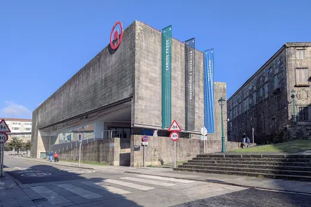
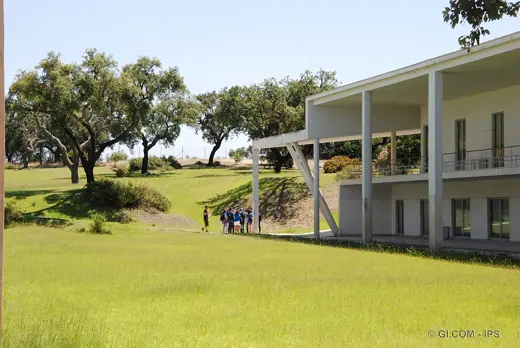
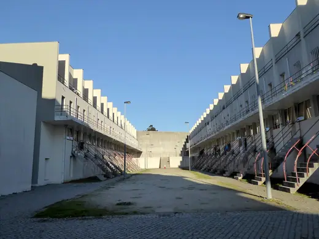

Álvaro Siza buildings 15
Sort
 Boa Nova Tea House1963 · Leça da Palmeira
Boa Nova Tea House1963 · Leça da Palmeira Quinta da Malagueira1977 · Évora
Quinta da Malagueira1977 · Évora
Galician Centre of Contemporary Art (CGAC)1993 · Santiago de Compostela Faculty of Architecture, University of Porto1996 · Porto
Faculty of Architecture, University of Porto1996 · Porto Portugal Pavilion1998 · Lisbon
Portugal Pavilion1998 · Lisbon MADRE Museum2005 · Naples
MADRE Museum2005 · Naples Iberê Camargo Foundation2008 · Porto Alegre
Iberê Camargo Foundation2008 · Porto Alegre New Orleans Tower2010 · Rotterdam
New Orleans Tower2010 · Rotterdam Leça Swimming Pools1966 · Matosinhos
Leça Swimming Pools1966 · Matosinhos Banco Borges & Irmão1986 · Vila do Conde
Banco Borges & Irmão1986 · Vila do Conde
Setúbal School of Education1994 · Setúbal Santa Maria Church, Marco de Canaveses1996 · Marco de Canaveses
Santa Maria Church, Marco de Canaveses1996 · Marco de Canaveses Serralves Museum of Contemporary Art1999 · Porto
Serralves Museum of Contemporary Art1999 · Porto
Bouça Social Housing2006 · Porto Nadir Afonso Contemporary Art Museum2016 · Chaves
Nadir Afonso Contemporary Art Museum2016 · Chaves